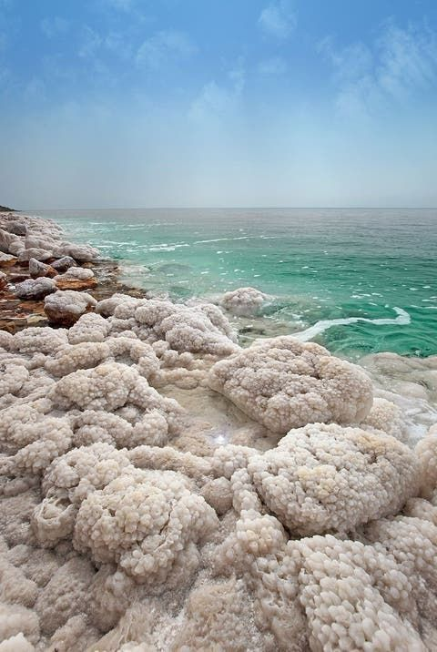

← All tours
From Amman to the Dead Sea, Aqaba, Wadi Rum & Petra – 3 Days

Overview
Jordan is famed for its natural and historical attractions, but sights are spread out, and with limited public transportation this makes it difficult for independent travelers to cover them all. Tick off the highlights without paying for costly individual taxi rides during this three-day, small-group excursion.
Enjoy a self-guided tour in the ruins of Petra, float in the mineral-rich waters of the Dead Sea, and explore otherworldly Wadi Rum, all at your own pace.
- Confirmation at time of booking
- Most travelers can participate
- Maximum 7 travelers
Itinerary
Day 1
Amman - Madaba - Mount Nebo - Dead Sea - Aqaba
- You'll get picked up
- AmmanStop: 45 minutes
- MadabaStop: 15 minutes
- Mount NeboStop: 30 minutes
- Dead Sea RegionStop: 3 hours
- AqabaStop: 14 hours
Day 2
Aqaba - Wadi Rum
- AqabaStop: 60 minutes
- Wadi RumStop: 17 hours
Day 3
Wadi Rum - Petra
- Wadi RumStop: 2 hours
- PetraStop: 5 hours
No meals included on this day. No accommodation included on this day.
Cost Info
What is and isn't covered in the price.
Price includes
- WiFi on board
- Water
- Air-conditioned vehicle
- English-speaking driver
Price excludes
- All fees and taxes
- Travel insurance
- Local tour guides
- Accommodation, meals and driver tips